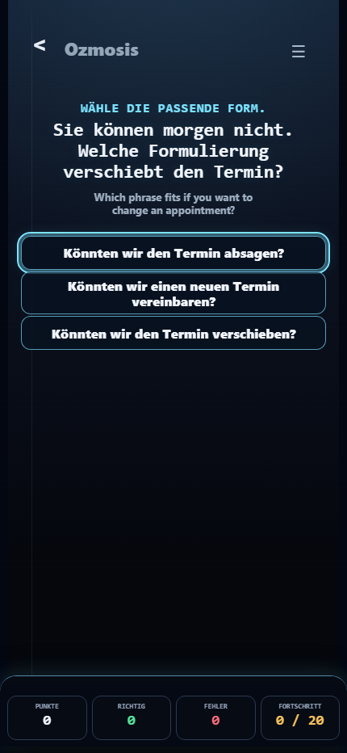
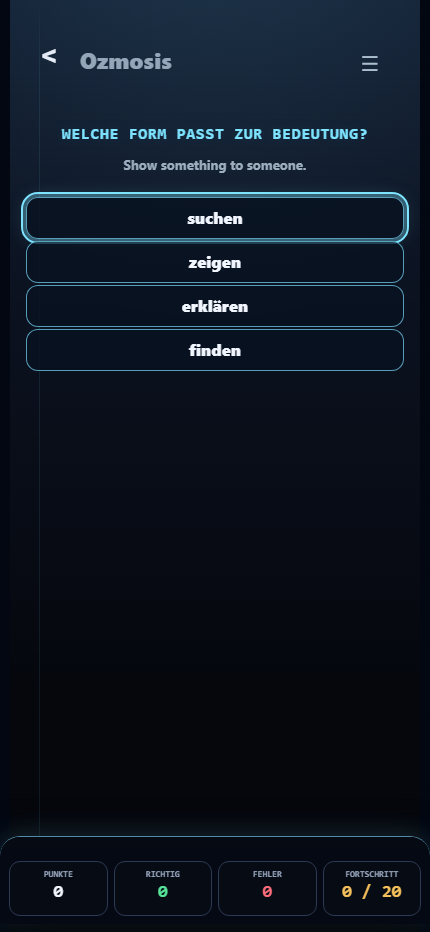
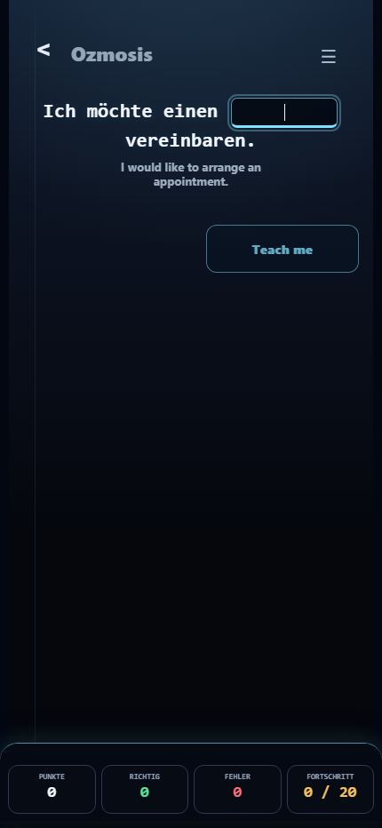
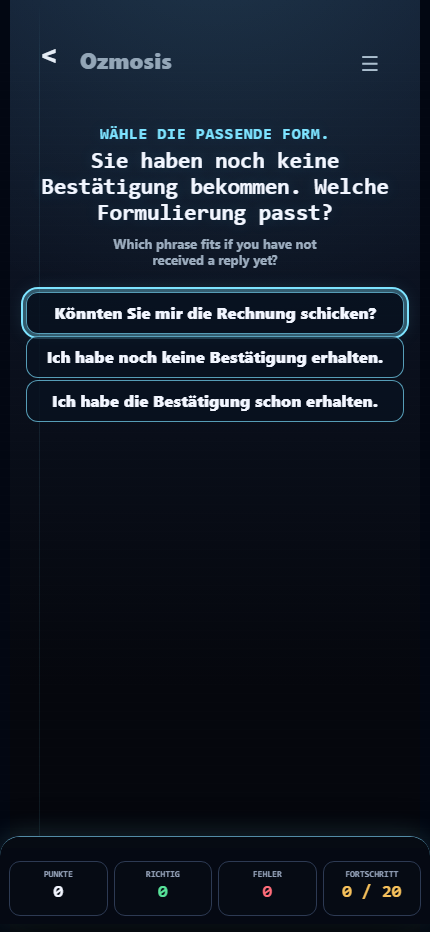
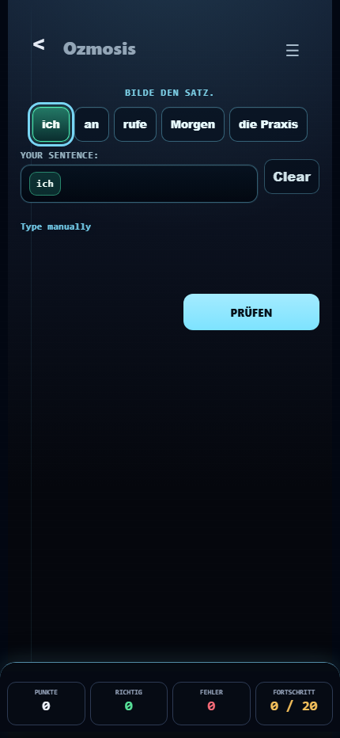

Ozmosis v0.85.6 source cleanup batch 1

meaning-choice-visible-cue-before-answer

internal-label-cleaned-before-answer

normal-cloze-non-regression

choice-non-regression

satzbau-build-line-non-regression